सुविकल्प: Mine Repurposing Tool
Select factors and sub-factors to discover suitable repurposing options for your mining site
![Coal Controller Organisation emblem]()
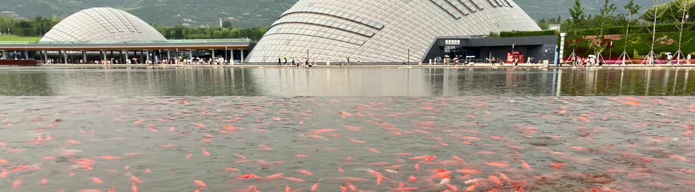
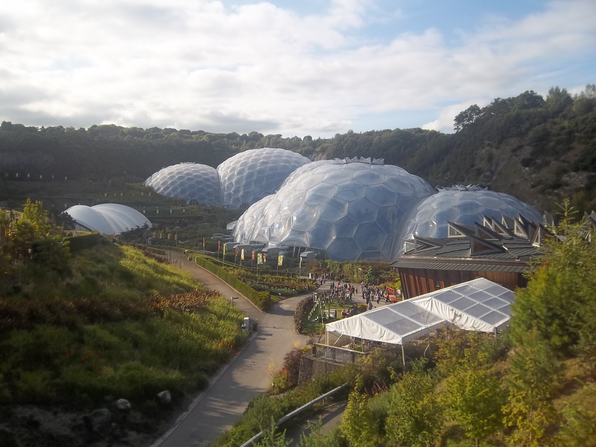
Botanical Gardens are particularly suited for closed coal mine areas — they transform disturbed land into a long-term ecological, educational and community asset. The Eden Project precedent demonstrates how even the most degraded extractive landscape can become a world-class plant-based destination. This pillar covers the project concept, strategic rationale, site suitability and indicative project scales.
This concept proposes the development of Botanical Gardens / Native Plant Conservation Landscapes on closed, reclaimed, or repurposed coal mine land as part of a sustainable mine-closure and post-mining land-use strategy. The objective is to convert under-utilized mine land into a biodiversity-supporting, education-oriented, eco-tourism-enabled, low-impact public landscape centred around native and climate-resilient plant collections; medicinal, aromatic, rare, threatened and endemic species conservation; ecological restoration of reclaimed mine land; community-based nursery and maintenance livelihoods; environmental education, interpretation and eco-tourism; and long-term carbon, biodiversity and ESG value creation.
Unlike conventional built infrastructure, botanical gardens can be developed progressively on reclaimed or partially restored land, support ecological restoration and soil stabilization, create long-term public and educational value, and are compatible with eco-parks, water bodies, agroforestry, nursery zones and biodiversity parks. This aligns with CCO mine-closure frameworks A.R.T.H.A., L.I.V.E.S. and R.E.C.L.A.I.M.
The following matrix provides a structured checklist for assessing the suitability of the proposed site for the selected repurposing option. It identifies the key physical, technical, environmental, infrastructure, legal, and owner-side readiness parameters that should be reviewed before the project is advanced to the next stage of development. The purpose of this matrix is to help the project owner understand existing site conditions, technical requirements, potential constraints, and preparatory actions required before feasibility studies, approvals, or tendering are initiated.
| Category | What to Assess / Prepare | Why It Matters | Owner-Side Readiness |
|---|---|---|---|
| Land Status | Closure status, permissible post-mining land use, land ownership and encumbrances | Legal viability for botanical garden development | Closure note |
| Landform Stability | Slope stability, subsidence risk, dump stability, erosion-prone zones | Visitor safety and long-term plantation stability | Geotechnical screening |
| Soil Condition | Soil depth, pH, fertility, compaction, heavy metals, salinity, organic carbon | Plant survival, species selection and food/medicinal plant safety | Soil report |
| Contamination Risk | Heavy metals, mine drainage, hydrocarbon residues, unsafe zones | Public safety and suitability for edible, medicinal and public-use plants | Environmental screening |
| Water Availability | Mine water, ponds, treated water, rainwater harvesting, irrigation feasibility | Essential for establishment phase and nursery operations | Water plan |
| Drainage | Surface runoff, waterlogging, erosion channels, stormwater movement | Prevents plantation failure and trail damage | Drainage plan |
| Climate | Temperature, rainfall, wind, humidity, frost/heat exposure | Determines species selection and irrigation design | Agro-climatic note |
| Vegetation | Existing plantations, invasive species, native flora, habitat patches | Forms basis for garden zoning and restoration | Plantation inventory |
| Biodiversity Potential | Birds, butterflies, pollinators, wetland species, native trees | Supports ecological and educational value | Biodiversity baseline |
| Landscape Diversity | Dumps, plains, water bodies, slopes, wetlands, viewpoints | Enables thematic zones and visitor experience design | Land-use map |
| Access | Roads, parking, pedestrian movement, emergency access | Visitor management and maintenance logistics | Access plan |
| Safety | Mine voids, steep slopes, unstable dumps, water-body edges | Public safety and controlled access | Zoning plan |
| Community Proximity | Nearby villages, SHGs, land-losers, youth, women groups, schools | Livelihood and education integration | Beneficiary mapping |
| Institutional Linkages | BSI, forest dept, horticulture dept, KVKs, universities, NGOs | Technical credibility and long-term plant conservation support | Partnership note |
| Visitor Potential | Nearby towns, schools, tourist circuits, eco-parks, transport | Determines scale, revenue and facility planning | Demand assessment |
The following matrix presents an indicative relationship between available site area, project scale, technical configuration, and likely development potential. It is intended to support preliminary planning by helping the project owner identify the appropriate scale and configuration for the proposed repurposing option. The values and recommendations are indicative and should be refined through detailed feasibility studies, site surveys, engineering assessments, and relevant technical and commercial evaluations.
Scale may be benchmarked against established gardens: Lalbagh Botanical Garden, Bengaluru covers ~240 acres; Acharya Jagadish Chandra Bose Indian Botanic Garden, Howrah covers ~109 ha with 12,000+ specimens; Eden Project, Cornwall built in an exhausted clay pit — now a world-class visitor destination.
| Land Area | Recommended Scale | Configuration | Use Case |
|---|---|---|---|
| 1–5 ha | Pilot botanical garden / demonstration landscape | Native plant demonstration plots, medicinal plant corner, small nursery, walking trail, interpretation boards | Proof of concept |
| 5–20 ha | Community botanical garden | Native tree zone, medicinal and aromatic plant garden, butterfly garden, nursery, training unit, small visitor facility | SHG livelihood and education |
| 20–50 ha | Integrated botanical and biodiversity park | Thematic gardens, arboretum, wetland garden, nursery, interpretation centre, compost unit, eco-trails | Cluster-level ecological and livelihood asset |
| 50–100 ha | Large botanical garden and eco-education park | Regional plant collections, conservation nursery, visitor centre, training centre, water-body integration, eco-tourism | PPP / CSR model |
| 100 ha+ | Regional botanical conservation landscape | Multi-zone botanical garden, arboretum, biodiversity park, research plots, seed bank, eco-tourism, landscape restoration zones | Just-transition flagship |
Six implementation models are available for botanical garden mine repurposing — from owner-managed EPC to hybrid community concessions. Model selection should reflect garden scale, welfare objectives, ecological restoration requirements, community livelihood integration, and mine owner capacity.
The following table outlines the possible implementation models that may be considered for developing the proposed repurposing project. These models differ in terms of ownership structure, funding responsibility, private sector participation, operational control, and long-term risk allocation. The purpose of this table is to help the project owner compare broad development routes and select an implementation approach that aligns with its financial capacity, institutional preference, risk appetite, and long-term asset management objectives.
| Model | Suitability | Comment |
|---|---|---|
| EPC | Moderate | Suitable for basic civil, landscape and nursery infrastructure creation |
| EPC + O&M | High | Strong for owner-controlled botanical garden with maintenance and community livelihood support |
| BOOT | Moderate to High | Suitable where private developer builds visitor facilities and transfers assets after concession |
| BOO | Moderate | Suitable for commercially oriented eco-tourism or nursery-led botanical projects, but requires safeguards |
| DBFOT | High | Suitable for large botanical gardens with visitor facilities, nurseries, interpretation centres and eco-tourism |
| Concession / Lease-Develop-Operate | Very High | Strong for botanical garden operation with community livelihood obligations and revenue sharing |
| Hybrid | Very High | Most flexible and balanced for ecological restoration, public education, livelihood and revenue objectives |
The following comparative assessment evaluates the major implementation models across key decision parameters such as investment requirement, ownership control, financing responsibility, contractual complexity, risk transfer, and long-term economic benefit. This matrix is intended to support early-stage decision-making by highlighting the relative strengths and limitations of each model. The final choice of model should be guided by the specific circumstances of the project, including its scale, commercial viability, applicable policy framework, and the owner's institutional preference.
| Evaluation Parameter | EPC | EPC+O&M | BOOT | DBFOT | Concession | Hybrid |
|---|---|---|---|---|---|---|
| Upfront investment by Mine Owner | High | High–Moderate | Low–Moderate | Low–Moderate | Low–Moderate | Variable |
| Ownership retained by Mine Owner | Yes | Yes | Land retained | Land retained | Land retained | Usually retained |
| Suitability for welfare objective | High | Very High | High if mandated | High | Very High | Very High |
| Suitability for local livelihood | Moderate | Very High | High | High–Very High | Very High | Very High |
| Suitability for ecological restoration | Moderate | High | High | High | High | Very High |
| Suitability for SHG / FPO integration | Moderate | High | Moderate | High if required | Very High | Very High |
| Revenue potential | Low–Moderate | Moderate | Moderate–High | High | Moderate–High | Variable–High |
| O&M burden on owner | High | Moderate | Low | Low | Low–Moderate | Shared |
| Commercial bankability | Low | Low–Moderate | Moderate–High | High | Moderate–High | Variable |
| Overall suitability for Botanical Gardens | Moderate | High | Moderate–High | High | Very High | Very High / Most Suitable |
The following table explains how major project responsibilities are typically allocated under different implementation models. It covers key functional areas such as site availability, financing, design and construction, regulatory approvals, operation and maintenance, revenue collection, asset ownership, and end-of-term transfer. This helps clarify the respective roles of the project owner, private developer, EPC contractor, operator, or concessionaire, and supports the preparation of tender documents and contractual structures.
| Responsibility Area | EPC | EPC+O&M | BOOT | Concession | Hybrid |
|---|---|---|---|---|---|
| Site / land availability | Mine Owner | Mine Owner | Mine Owner / authority | Mine Owner / authority | Mine Owner / shared |
| Botanical master planning | Mine Owner / consultant | Mine Owner + O&M agency | Shared / developer-refined | Shared | Shared |
| Nursery establishment | EPC contractor | EPC contractor / O&M agency | Developer | Concessionaire / operator | Shared |
| Plantation and landscaping | EPC contractor | EPC contractor / O&M agency | Developer | Concessionaire / operator | Shared with local groups |
| Interpretation centre | EPC contractor / owner | Owner / O&M agency | Developer | Concessionaire / operator | Owner + operator / NGO |
| Community mobilization | Mine Owner | Mine Owner + O&M agency | Developer if mandated | Concessionaire + NGO / FPO | NGO / SHG / FPO + owner |
| SHG / FPO participation | Mine Owner-controlled | Mine Owner + O&M agency | Contract-based | Strong contractual role | Core feature |
| Revenue collection | Mine Owner | Mine Owner / operator | Developer during concession | Concessionaire / shared | Shared |
| O&M risk | Mine Owner | O&M agency | Developer | Concessionaire / operator | Shared |
This pillar covers funding logic by implementation model, revenue streams from botanical garden operations, livelihood outcomes per model, and a combined financial and social value comparison to support investment decision-making.
The following table presents the broad funding logic for each implementation model. It explains who is expected to finance the project, the level of owner-side funding requirement, and the commercial rationale behind each structure. This section is intended to help the project owner assess whether the project is more suitable for owner-funded development, private investment, public-private partnership, lease or concession structure, or a hybrid funding arrangement.
| Model | Funding Source | Owner Funding Requirement | Suitability for Botanical Gardens |
|---|---|---|---|
| EPC | Mine owner budget / mine closure fund / CSR | High | Suitable for basic botanical garden infrastructure, fencing, pathways, irrigation, nursery, plantation and interpretation boards |
| EPC + O&M | Mine owner budget + O&M budget + CSR | High to Moderate | Strong fit where owner wants control over public access, botanical collections, maintenance, SHG participation and training |
| BOOT | Private developer capital + CSR / VGF / grant support | Low to Moderate | Suitable for botanical garden with visitor centre, eco-tourism facilities, nursery, cafeteria and eventual asset transfer |
| BOO | Private developer capital | Low | Suitable only for commercially driven nursery, eco-tourism or landscape projects; less preferred where public access is important |
| DBFOT | Private concessionaire + public / CSR support + VGF | Low to Moderate | Suitable for large botanical garden parks with interpretation centres, conservation nurseries, eco-tourism and visitor facilities |
| Concession / Lease | Private operator / FPO / SHG federation / NGO / CSR / blended finance | Low to Moderate | Very suitable for community-linked botanical gardens with livelihood obligations, visitor revenue, nursery sales and revenue sharing |
| Hybrid | Mine owner + CSR + govt schemes + private operator + SHG/FPO + NGO + grants | Variable | Most suitable for balancing ecological restoration, botanical conservation, public education, livelihood generation and owner revenue |
The following table explains how revenue may be generated under different implementation models and identifies who is likely to receive the principal project income. It also describes the nature and extent of the financial benefit available to the project owner, whether through direct project revenue, cost savings, lease income, concession fees, revenue sharing, service charges, or eventual asset transfer. This comparison is intended to support the selection of a commercially appropriate model for the proposed repurposing project.
| Model | How Revenue is Generated | Who Receives Revenue | Owner's Financial Benefit |
|---|---|---|---|
| EPC | Entry tickets, nursery sales, plant sales, training fees, guided tours, exhibitions, events, interpretation centre, eco-tourism | Mine Owner | Full revenue retained by owner; owner bears full CAPEX, O&M, horticulture, visitor management and market risk |
| EPC + O&M | Same revenue streams: tickets, plant sales, training, guided tours, eco-tourism, exhibitions, school programmes, compost sales, events | Mine Owner after paying O&M agency | High benefit; owner retains revenue while outsourcing operations and technical management |
| BOOT | Developer earns from ticketing, visitor facilities, nursery sales, events, cafeteria, guided tours, training, interpretation, eco-tourism | Developer / concessionaire during concession | Lease rent, concession fee, revenue share, local economic uplift and asset transfer at end of concession |
| DBFOT | Structured revenue from ticketing, nursery, interpretation, eco-tourism, events, training, visitor amenities and CSR-supported education | Concessionaire during concession | Concession fee, lease rent, revenue share, performance-linked payments and asset transfer at end |
| Concession / Lease | Revenue from garden operations, nursery sales, SHG/FPO-based plant production, training, guided tours, visitor services, eco-tourism and events | Concessionaire / operator as per agreement | Lease rentals, revenue share, improved land value, ESG gains and indirect socio-economic benefits |
| Hybrid | Mixed revenue streams: tickets, nursery sales, SHG/FPO enterprises, eco-tourism, training, CSR/grants, events, exhibitions, interpretation centre, plant-based products | Shared between owner, operator, SHG/FPO, NGO as structured | Variable to high; owner benefits through revenue share, reduced O&M burden, ESG gains and enhanced land value |
The following table assesses the likely local livelihood and employment potential of each implementation model. It considers the extent to which each model can support construction-phase jobs, long-term operational employment, local procurement opportunities, skill development, community participation, and associated support services. This section is particularly relevant where the repurposing project is expected to contribute to post-mining or post-operational economic transition and sustained local community benefit.
| Model | Local Job Potential | Why | Overall Suggestibility for Local Livelihood |
|---|---|---|---|
| EPC | Moderate | Creates short-term jobs in site preparation, plantation and nursery setup. Long-term jobs depend on owner-led operations. | Moderate |
| EPC + O&M | High to Very High | Sustained employment in gardening, nursery, irrigation, composting, visitor management, guides, ticketing, security, training and SHG facilitation. | Very High |
| BOOT | High | Generates jobs during development and operation. Strong if agreement mandates local hiring, SHG/FPO nursery participation, training and local procurement. | High |
| BOO | Moderate | Can create nursery, garden maintenance, visitor facility and eco-tourism jobs, but local livelihood depends on private developer policy unless mandated. | Moderate |
| DBFOT | High to Very High | Suitable for large botanical gardens with nurseries, interpretation centres, eco-tourism, training centres and conservation facilities. | High to Very High |
| Concession / Lease | Very High | Strong model for long-term local livelihood through SHG/FPO participation, nursery production, plant sales, garden maintenance, visitor services and market linkage. | Very High |
| Hybrid | Very High | Best suited for combining mine-owner support, private expertise, NGO facilitation, SHG/FPO participation, CSR support, conservation objectives and community benefit obligations. | Very High / Most Suitable |
The following combined comparison brings together three important dimensions of project structuring: revenue potential, owner-side financial benefit, and local livelihood generation. It provides a consolidated view of how each implementation model performs across commercial, institutional, and community-development perspectives. This matrix is intended to support balanced decision-making where the objective extends beyond financial return to include sustainable site reuse and long-term local economic benefit.
| Model | Owner Profitability | Local Job Creation | Overall Comment |
|---|---|---|---|
| EPC | High — owner retains full revenue after capital repayment | Moderate to High | Suitable where the owner has funding capacity and seeks full control over the asset |
| EPC + O&M | High — strong ongoing revenue net of O&M costs | High to Very High | Best for owners who can fund development and want sustained control with professional management |
| BOOT | Moderate — income through lease, concession fee, or transfer value | High | Suitable where private financing is needed; owner benefits indirectly and gains the asset at end of concession |
| DBFOT | Moderate to High — through lease, concession fee, and transfer | High to Very High | Strong PPP structure for larger projects requiring private investment and structured public participation |
| Concession / Lease | Moderate — through concession fee and revenue sharing | High to Very High | Suitable where the owner wants retained land control and outsourced commercial activation |
| Hybrid | Variable to High — depends on structure and revenue-sharing terms | Very High | Most suitable where public value, community benefit, and commercial viability are all required |
This pillar covers pre-RFP readiness requirements and activities that can be taken up post-award, enabling a well-structured botanical garden mine-repurposing tender process.
The following section identifies the key owner-side preparatory actions that should ideally be completed before issuing the first Request for Proposal. These actions are aimed at reducing uncertainty for prospective bidders, improving project bankability, clarifying site availability, identifying approval pathways and risks, and defining the technical and commercial scope of the project. Completing these preparatory steps before tendering can improve bid quality, attract credible responses, and reduce the risk of delays during project implementation.
The following section lists the principal activities that may be undertaken by the selected contractor, developer, concessionaire, operator, or implementation agency after award of the project. These activities generally include detailed site investigations, engineering design, statutory submissions and approvals, equipment procurement, construction, commissioning, operational planning, staff training, and performance monitoring. The distinction between pre-RFP owner preparedness and post-award implementation responsibilities helps ensure an appropriate and efficient allocation of effort across the project development cycle.
The following implementation pathway presents a practical high-level sequence for advancing the proposed repurposing concept from initial approval through to project execution and long-term operation. It outlines the broad stages of concept approval, preliminary studies, model selection, bid preparation, procurement, detailed design, statutory approvals, construction, commissioning, and ongoing operation. This pathway is indicative and should be adapted to reflect the specific complexity, regulatory requirements, financing structure, and site conditions applicable to the project.
This pillar provides the recommended way forward for botanical garden mine repurposing, the indicative implementation pathway, key references for further reading, and a glossary of abbreviations used throughout the PRISM framework.
The following way forward summarizes the preferred development approach for the proposed repurposing option, based on the assessment presented in PRISM (Post Mining Repurposing Implementation and Strategy Models). It identifies the most suitable implementation models in order of preference, highlights key technical and due-diligence considerations, and outlines the recommended next steps and broad development logic. This section is intended to guide internal decision-making and support the project owner in progressing from concept-stage evaluation toward feasibility assessment, project structuring, regulatory approvals, and implementation planning.
Preferred Models, in order: (1) Hybrid Model, (2) Concession / Lease-Develop-Operate, (3) DBFOT
Why preferred: Hybrid is preferred because botanical gardens need long-term horticultural care, public access, ecological restoration and visitor services. The hybrid mix should include owner-funded core landscape + botanical / horticulture institution + private visitor-service operator + local nursery / SHG participation.
Secondary option: EPC + O&M is suitable for welfare-driven gardens where ecological outcomes and public access must remain under owner control.
Suggestable technical care: Soil improvement, species selection, irrigation, nursery, signage, visitor safety, waste management, biodiversity documentation and long-term maintenance must be planned.
Recommended development logic: Begin with native species zones, nursery, walking trails, interpretation boards and visitor amenities. Later add research plots, educational programmes, café, plant sales and eco-tourism linkage.
Final recommendation: Hybrid Model is most suitable because a botanical garden is an ecological, educational and livelihood asset, not only a visitor facility.
Disclaimer — All repurposing interventions proposed under P.R.I.S.M. shall remain subject to applicable mining laws, land-use regulations, environmental approvals, mine-closure conditions, forest and biodiversity regulations, groundwater permissions, and any other statutory approvals as may be applicable. Land ownership is proposed to remain with the mine owner / competent authority unless otherwise permitted under applicable law.
| Abbreviation | Full Form |
|---|---|
| EPC | Engineering, Procurement and Construction |
| O&M | Operation and Maintenance |
| FM | Facility Management |
| BOOT | Build, Own, Operate, Transfer |
| BOO | Build, Own, Operate |
| DBFOT | Design, Build, Finance, Operate, Transfer |
| PPP | Public-Private Partnership |
| CSR | Corporate Social Responsibility |
| RFP | Request for Proposal |
| DPR | Detailed Project Report |
| CAPEX | Capital Expenditure |
| ESG | Environmental, Social and Governance |
| SHG | Self-Help Group |
| FPO | Farmer Producer Organization |
| NGO | Non-Governmental Organization |
| VGF | Viability Gap Funding |
| KVK | Krishi Vigyan Kendra |
| BSI | Botanical Survey of India |
| BGCI | Botanic Gardens Conservation International |
| CAMPA | Compensatory Afforestation Fund Management and Planning Authority |
| MoEFCC | Ministry of Environment, Forest and Climate Change |
| NBPGR | National Bureau of Plant Genetic Resources |
| CCO | Coal Controller Organisation |
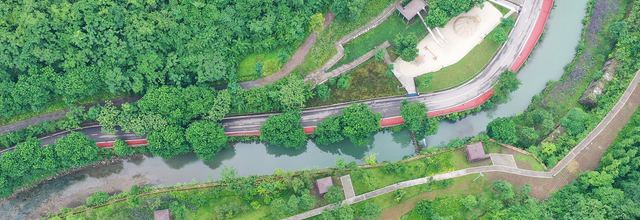
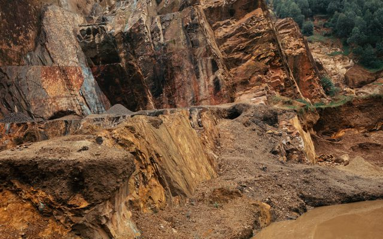
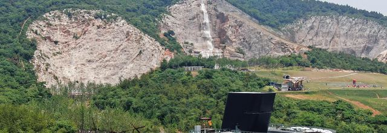
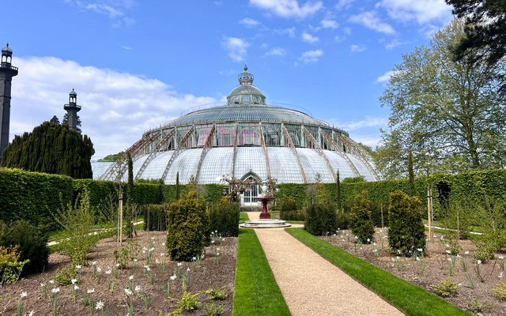
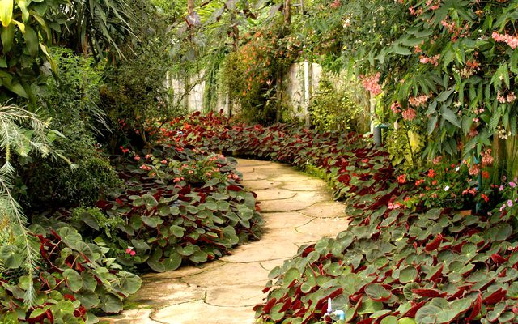
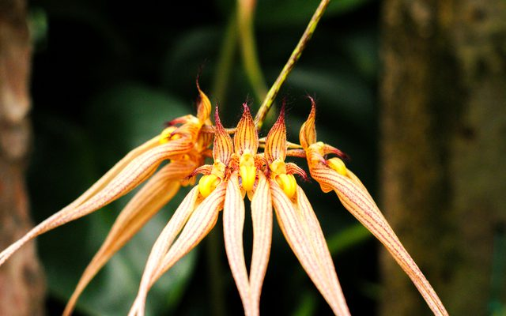
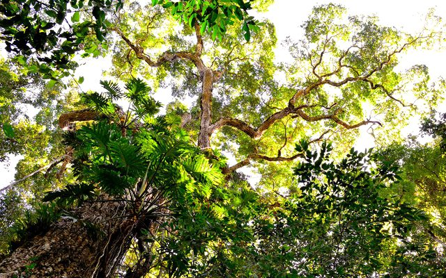
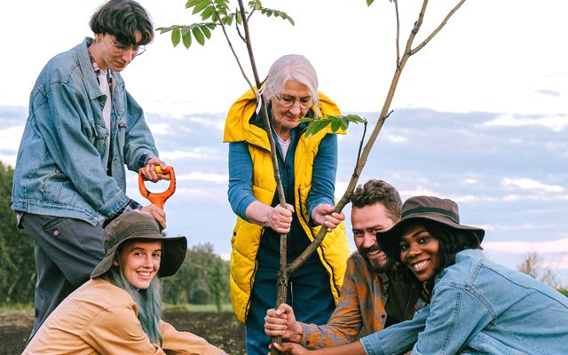
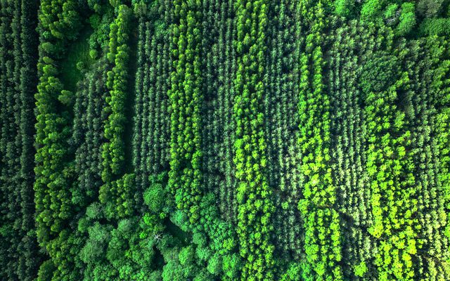
Links open external websites. Coal Controller Organisation does not endorse third-party content.


.png)

Disclaimer: Inclusion of an agency on this list does not constitute endorsement, empanelment, or recommendation by the Coal Controller Organisation or the Ministry of Coal, Government of India. Mine owners and project proponents are advised to conduct their own due diligence process before engaging any agency.
Senior scientist at the Botanical Survey of India specialising in angiosperm taxonomy and plant ecology.
Expert in botanical garden design, plant conservation and ex-situ biodiversity management at NBRI.
Leading authority on plant taxonomy and botanical garden management at BSI.
Specialist in plant ecology and environmental technologies for mine-land restoration at NBRI, Lucknow.
Plant taxonomist and garden management specialist at the Jawaharlal Nehru Tropical Botanic Garden and Research Institute, Kerala.
Disclaimer: Inclusion of an expert does not constitute endorsement, empanelment, or recommendation by the Coal Controller Organisation or the Ministry of Coal, Government of India. Users are advised to independently verify credentials and suitability before engaging any individual.